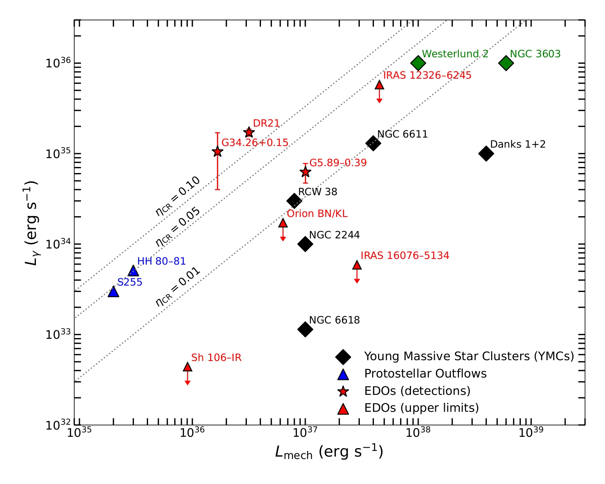
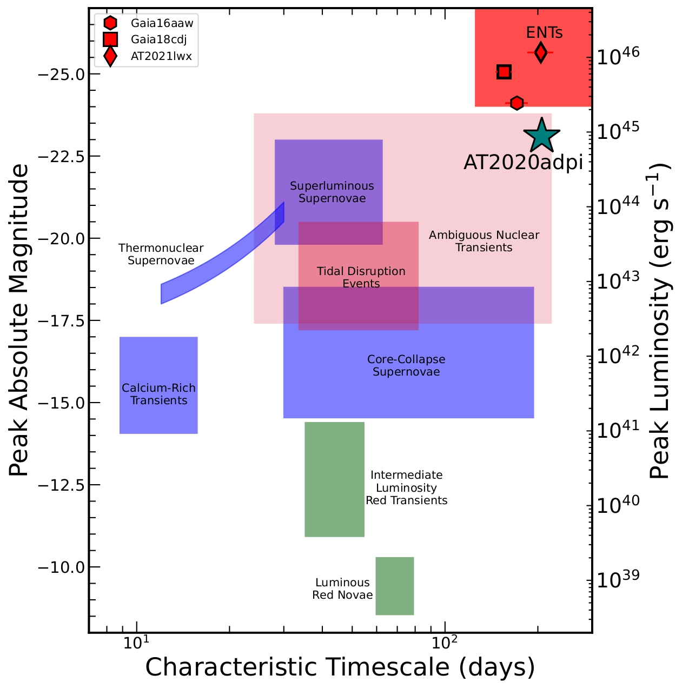

Cosmic Ray Acceleration in Young Star Forming Regions
Keywords: Fermi-LAT, Stellar Winds, Diffusion Coefficient
Cosmic rays play a key role in shaping galaxies, influencing how they form and evolve. Understanding where these high-energy particles come from is therefore essential for modeling galaxy evolution and cosmic-ray feedback. While supernova remnants are traditionally considered the main accelerators of cosmic rays, recent observations suggest that young, massive star-forming regions may also contribute significantly. In this work, we use Fermi-LAT gamma-ray observations to investigate cosmic-ray acceleration in two such environments.
First, we look at the young star-forming region RCW 38 (age < 0.5 Myr), where we detect gamma-ray emission at a 22σ significance level, providing strong evidence that stellar winds can accelerate cosmic-ray particles. These observations allow us to constrain the cosmic-ray acceleration efficiency, diffusion timescales, and pressure within the region.
We also identify a new class of Fermi gamma-ray sources associated with explosive outflows, focusing on DR21 in the Cygnus-X star-forming complex, detected at 35σ significance. For this system, we quantify the acceleration efficiency of explosive outflows and evaluate their contribution to the overall galactic cosmic-ray budget. Overall, our results show that star-forming regions younger than ~3 Myr are efficient cosmic-ray accelerators, with important implications for galaxy simulations and for understanding the origin of galactic cosmic rays.

Unraveling the Nature of the Nuclear Transient AT2020adpi
Keywords: Active Galactic Nuclei, Tidal Disruption Events
I study transient events associated with supermassive black holes, which offer unique insights into accretion physics in galactic nuclei. In a recent multiwavelength study, I analyze AT2020adpi, a luminous optical/UV nuclear transient at z = 0.26 that does not fit cleanly into existing categories such as tidal disruption events or standard AGN variability. Its unusual light curve, strong mid-infrared flare, and evolving emission-line features suggest an accretion episode driven by either a stellar disruption within an active disk or instabilities in an active nucleus. This event highlights both the diversity of nuclear transients and the importance of coordinated, multiwavelength observations.
